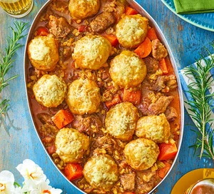

Lamb stew with fluffy rosemary & cheddar dumplings

Description
Stretch your Easter lamb further by using it in a stew that’s bulked out with pearl barley and cheesy dumplings.
Or, swap lamb for mutton, hogget or goat
Ingredients
- 600g boneless shoulder or leg of lamb, goat, mutton or hogget, trimmed of excess fat and cut into 3cm pieces
- 2 tbsp plain flour
- 2 tbsp neutral-tasting oil
- 75g smoked bacon lardons or pancetta
- 2 onions, chopped
- 2 carrots, cut into 2cm chunks
- 2 celery sticks, sliced
- 2 garlic cloves, crushed
- 75g pearl barley
- 2 rosemary sprigs, needles picked and finely chopped
- 1 tbsp tomato purée
- 1 tbsp Worcestershire sauce
- 1 tbsp redcurrant jelly
- 650ml chicken or lamb stock
- 2 bay leaves
For the dumplings
- 175g self-raising flour
- 1 tsp baking powder
- 2 rosemary sprigs, needles picked and finely chopped
- 50g cheddar, grated
- 100g full-fat natural yogurt
Steps
- Season the lamb pieces and toss in the flour. Heat 1 tbsp of the oil in a large flameproof casserole dish
over a medium-high heat and brown half the lamb pieces, ensuring they’re deeply coloured before turning over
to brown on all sides. Remove to a bowl. Repeat with the remaining oil and the rest of the lamb pieces. Be
careful not to overcrowd the pan, or the lamb will steam rather than brown.
- Fry the bacon in the pan for a few minutes, then tip in the veg and garlic. Cook for 3-4 mins more until the
veg has just started to soften, then stir in the browned lamb, the pearl barley, rosemary, tomato purée,
Worcestershire sauce, redcurrant jelly and stock. Season well, then tuck the bay leaves into the sauce.
Bring to a simmer.
- Cut out a circle of baking parchment that’s large enough to cover the stew (this is called a cartouche, and
it helps keep the meat submerged in the stew). Put this directly on the surface of the stew, then cover with
the lid and turn the heat to low. Simmer for 1 hr 30 mins-2 hrs, or until the meat is tender but not falling
apart. Alternatively, transfer to a slow cooker for 6-8 hrs on low. Once cooled, will keep frozen for up to
six months.
- Meanwhile, make the dumplings. Weigh the flour out into a bowl and add the baking powder and ½ tsp salt.
Stir in the rosemary and half the cheddar. Make a well in the centre and tip in the yogurt, then mix to firm
but pliable dough, adding a splash of water if it feels too dry. Divide the dough into 12 equal pieces and
roll into balls. Chill until needed.
- Heat the oven to 180C/160C fan/gas 4. Remove the stew from the heat, discard the cartouche and arrange the
dumplings on top of the stew. Cover with the lid, transfer to the oven and cook for 20 mins. Remove the lid
and sprinkle the rest of the cheddar over the dumplings. Cook for 10-15 mins more, uncovered, until the
dumplings have browned and puffed up.